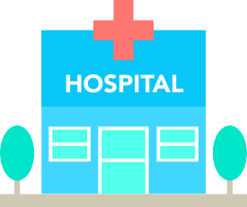
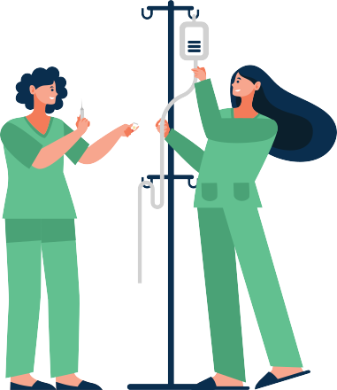

Plataforma Web para centralización de
camas críticas de internación en hospitales
de la Provincia de Santa Fe
Sebastián Berra
Introducción - Efectores de Salud
Definición de efectores de salud

Donde diregirse para una atención médica
Los lugares donde se realizan atenciones médicas, como dispensarios, centros de
salud, hasta los hospitales de más alta complejidad son llamados efectores de salud.
Cada uno de ellos tienen un área de cobertura dependiendo de su ubicación geográfica
y según características de infraestructura y de complejidad médica
La organización actual de la salud en la provincia de Santa Fe establece que cada
paciente acuda por atención médica a su efector más cercano, siendo los dispensarios
y los centros de salud de los barrios los primeros lugares donde una persona debe
dirigirse
Introducción - Disponibilidad de camas
En la actualidad no se conoce la disponibilidad de camas
En la actualidad no se conoce la disponibilidad de camas de los hospitales públicos en
un sistema centralizado, lo que denota una falencia en el sistema de salud
Introducción - Descripción del problema
Un paciente necesita ser trasladado a un hospital
Falta de información desde un nivel central
Un paciente en un determinado momento puede necesitar ser trasladado a un hospital.
La situación puede darse por dos razones, una emergencia en la vía pública o por un
traslado programado. Este último es cuando se requiere un tipo de atención y nivel de
complejidad no disponibles en el efector más cercano al domicilio del paciente
La falta de información desde un nivel central sobre las camas libres y la clasificación
de las mismas en los efectores provinciales, es un factor que retrasa la resolución del
destino de un traslado, siendo un problema si la decisión pone en riesgo la salud de un
paciente
Reflejar la disponibilidad y características de las camas de internación de los
hospitales provinciales
Implementar en producción la plataforma
El proyecto se enfoca en los hospitales públicos de la provincia, pero puede incluir efectores privados
Este trabajo tiene como propósito crear un sitio web para el Ministerio de Salud de
Santa Fe que refleje disponibilidad y características de las camas de internación de los
hospitales provinciales. Pero el rumbo del proyecto no es el desarrollo de un sistema
como elemento aislado, sino que el logro consiste en la implementación en producción
de la plataforma
El desarrollo del proyecto se enfocará en los hospitales públicos de la provincia, pero la
solución no es cerrada, sino que permitirá incorporar datos de efectores privados si así
se dispone
Crear la estructura de datos que represente la organización edilicia
Implementar un conjunto de servicios web para actualizar las camas
Crear una sitio para consulta de camas
Diseñar la estructura de datos que represente la organización edilicia de los hospitales
provinciales de salud
Implementar un conjunto de servicios web que permita crear, eliminar y
modificar el estado de las camas
Crear un sitio web para ver el estado de las camas, que permita la búsqueda según
características, lugar geográfico y estado
Publicar y dar acceso a organismos públicos de salud
- Organización
- Características
Características de la informática hospitalaria
Poner en producción un nuevo software en la administración pública de la Provincia de
Santa Fe tiene sus particularidades, a continuación se comentan las características
más importantes a tener en cuenta.
Contexto - Niveles de atención

Primer nivel: Baja complejidad
Segundo nivel: Mediana y baja complejidad
Tercer nivel: Alta complejidad médica y tecnológica
Primer nivel
Lo componen centros de salud de baja complejidad, no poseen internación y cumplen
funciones de promoción, prevención, diagnóstico, atención ambulatoria y cuidados
domiciliarios. Existen aproximadamente 450 efectores públicos de primer nivel
distribuidos por toda la provincia
Segundo nivel
Son efectores de mediana y baja complejidad que poseen internación. Cumplen la
función de asistencia y diagnóstico entre el primer y tercer nivel de atención. Pueden
llegar a tener hasta 4 o 5 servicios médicos de internación y hasta 40 camas. Existen
115 efectores públicos de segundo nivel
Tercer nivel
Está compuesto por los hospitales de alta complejidad médica y tecnológica. Están
ubicados estratégicamente en el territorio y conforman una red de georreferencia entre
sí y con los demás niveles de atención, siendo los de jerarquía más alta. Tienen la
responsabilidad de dar respuestas a las necesidades críticas e intermedias, en
internación, diagnósticos y atención ambulatoria. Poseen la mayor cantidad de
especialidades médicas y pueden llegar a tener hasta 400 camas
Contexto - Efectores con internación
Diferencia y particularidades
La diversidad de personal, infraestructura y servicios médicos que existe entre los
distintos efectores hace que la situación desde el punto de vista informático sea
particular en cada caso. Una diferencia es que en la mayoría de los efectores tienen
implementado algún sistema de la Sectorial de Informática como HMI, Diagnose-HMI2,
Epicrisis, SiHos o RI, en otros tienen algún software de terceros o no tienen ningún
sistema para realizar la gestión de internación
En cada hospital la adquisición del equipo informático puede darse por capital propio
del efector o por una licitación del Ministerio de Salud. La instalación de redes y
software la realiza el equipo informático del hospital el cual es parte de la Sectorial de
Informática de Salud.
El escenario es heterogéneo entre hospitales y cada cual tiene particularidades en la
organización física y funcional. El circuito que recorre el registro de una internación es
reflejado en un sistema local, y debe actualizarse en el momento adecuado para tener
una lectura precisa del estado actual de una cama. Esto está ligado fuertemente al
personal que realiza tales tareas.
Plan de implementación
La puesta en marcha en producción dependerá de varios factores, tanto tecnológicos
como humanos. Una buena estrategia minimiza los factores que puedan llevar el
proyecto al fracaso. Conocer los recursos humanos, la frecuencia de actualización de
los datos y la infraestructura tecnológica son factores que están fuertemente vinculados
y que deben analizarse en cada implementación.
Por la cantidad de camas y porque tienen la más alta complejidad médica, lo cual es
crucial en una emergencia, el mayor interés está en los hospitales de tercer nivel. La
realidad en los hospitales es que no hay personal las 24 horas del día que registre los
movimientos oportunamente. Aunque esto parezca sencillo de solucionar con solo
poner una persona a cargar la información, en la práctica no lo es. Esto es así por una
diversidad de factores que conviven en la administración y funcionalidad de cada
hospital. La manera de llevar este proyecto adelante consiste en lograr un consenso
entre los directores de cada hospital, la gestión política del Ministerio de Salud y un
soporte técnico y tecnológico de calidad.
El éxito de un software en producción en la administración pública depende de un
conjunto de personas
El éxito de un software en producción en la administración pública depende de un
conjunto de personas, y no basta con la voluntad de algunos pocos. Empieza con el
funcionario de turno, sigue con el equipo técnico y continúa con los usuarios que
utilizarán la herramienta. Además, la buena calidad de información solo será posible si
las personas que actualizan los datos en el día a día cumplen sus tareas a conciencia
Contexto - Infraestructura
El Ministerio de Salud utiliza la infraestructura tecnológica que la Secretaría de
Tecnología para la Gestión
El Ministerio de Salud utiliza la infraestructura tecnológica que la Secretaría de
Tecnología para la Gestión (STG) brinda, como servidores web, base de datos, soporte
técnico y la red física de comunicaciones. Esta última se refiere a la red MAN que
conecta con fibra óptica los distintos edificios públicos provinciales, como Casa de
Gobierno, Ministerios y otras dependencias.
Los hospitales públicos provinciales más grandes están conectados a la red MAN de
fibra óptica, de manera que los problemas físicos de comunicación entre los sistemas
informáticos están cubiertos. Las centrales y postas del 107 poseen internet o fibra
óptica, de manera que podrían consultar el sistema de camas en cualquier momento.
La utilización en producción de los servicios web desarrollados en este proyecto, hacen
un uso práctico de la conectividad física y lógica disponible en la provincia. El proyecto
tiene en cuenta esto, y utiliza como medio de comunicación la red MAN cuando es
posible.
Contexto - Tecnología y Administración Pública
Cambios tecnológicos lentos por distintos motivos
Los servicios web tipo RESTful son adecuados para este escenario
En el caso de la administración pública los cambios tecnológicos son procesos
generalmente más lentos. Los motivos pueden ser de diferente índole, como por
ejemplo la disposición física de la estructura edilicia de un efector, personal reacia a la
incorporación de nuevas herramientas o un cambio en la política de estado
La utilización de servicios web tipo RESTful para el desarrollo del proyecto hace que la
durabilidad y robustez sea un elección adecuada para escenario informático provincial,
garantizando así la continuidad de la usabilidad del software en el tiempo.
En la actualidad las tecnologías informáticas evolucionan continuamente. Aparecen
nuevas aplicaciones, herramientas y recursos que hacen que los paradigmas de
resolución para un mismo problema no sean iguales en dos momentos distintos de
tiempo.
El mejor escenario para iniciar con nuevo sistema o implementar procesos
estandarizados de gestión, son los hospitales nuevos, donde la disposición de la
construcción tiene mejor diseño para la salud y el personal es nuevo.
Organización e informatización en hospitales
En las dependencias públicas lograr que un sistema nuevo llegue a utilizarse en la
práctica es una tarea compleja. Este desafío involucra cuestiones funcionales e
institucionales que van a más allá de lo técnico. Es por eso que es necesario
comprender y determinar el proceso que sigue una internación, qué funciones realizan
las personas que intervienen, y qué herramientas de informatización utilizan.
Por otro lado, la infraestructura tecnológica para la implementación es la que
actualmente posee la Provincia de Santa Fe, lo que implica a priori, un panorama
adecuado para el desarrollo del proyecto.
Este apartado plantea el estado de situación desde una perspectiva global de toda la
provincia, cuantifica y define a los hospitales con internación, y menciona los aspectos
generales a tener en cuenta para la puesta en marcha.
Relevamiento
Clientes, usuarios y stakeholders
En este capítulo se explica como está constituida la red de emergencias pública, y cual
es el proceso que se realiza ante una emergencia. Luego se muestra como están
configuradas físicamente las camas en los hospitales.
Relevamiento - Clientes, Usuarios y Stakeholders
Clientes: Quienes se benefician son las personas que necesitan ser trasladados
en una ambulancia o que, por alguna cirscuntancia, requieren una cama de internación
Usuarios: son las personas que utilizarán la información para administrar y tomar
decisiones. Pueden ser personal del SIES, agentes de salud o funcionarios de la salud
Stakeholders: agentes de salud que se encuentran alcanzados por el sistema de emergencias
y traslados, como choferes, enfermeros, camilleros y personal vinculado a internaciones
Se puede decir que el sistema de salud público provincial en general es un interesado
en este sistema, ya que las camas de internación son un servicio a la comunidad.
Dentro de este grupo se puede nombrar a los funcionarios, choferes de ambulancias,
médicos y personal de salud en hospitales.
También se puede conciderar que el
ciudadano también es un stakeholder, porque es quien se beneficia con el servicio de
emergencias y traslados que brinda el estado.
Los hospitales que tienen internación y el servicio de ambulancias estatal serían las
entidades involucradas más directamente con el software. El principal consumidor del
proyecto es el usuario que desde una central del Servicio de Emergencias Medicas
define el destino (cama) de un paciente.
Relevamiento - Centrales operativas
Sistema Integrado de Emergencias Sanitarias
Con el fin de cumplir con las emergencias de manera óptima, la provincia trabaja en
forma integrada con otras fuerzas, respetando la especificidad de cada una. Además,
trabaja de forma coordinada con las comunas y municipios para dar forma y legitimidad
a la red de emergencias, respetando la diversidad de realidades ambientales,
geográficas, culturales y sociales.
La provincia tiene cinco centrales SIES, una en cada
cabecera de nodo de salud. Estas son llamadas centrales de emergencia territorial
(CET). Cada CET tiene a su cargo varias centrales operativas territoriales(COT).
La localización de cada COT está definida según características geográficas, densidad
de población y complejidad de los problemas de salud y contexto social. En la figura 2
se muestra la distribución de las centrales CET y COT.
Las centrales SIES están una por cada cabecera de región:
Reconquista, Rafaela, Santa Fe, Rosario y Venado Tuerto.
Relevamiento - Derivaciones y Emergencias
Derivaciones y emergencias
El SIES trabaja internamente la demanda asistencial en dos grupos, las derivaciones y
las emergencias. Se llaman emergencias a las situaciones donde se requiere
asistencia médica, por ejemplo en un accidente en la vía pública, este llamado lo
realiza cualquier persona. Las derivaciones son traslados programados, un ejemplo es
cuando un paciente se encuentra internado en un determinado efector y necesita
realizarse un estudio en otro establecimiento, esta gestión la realiza el centro de salud
donde se encuentra el paciente.
Las centrales de emergencias reciben las llamada a través de la línea 107 desde
cualquier punto del territorio provincial, donde es contestada por la central más próxima
al solicitante. Por ejemplo, si un ciudadano sufre un accidente en la RP 1 km 5, San
José del Rincón, y llama al 107, será atendido por la central más próxima a su llamado,
que es la de Santa Fe.
Las llamadas son tomadas por los operadores que, una vez que reúnan los datos del
lugar de la demanda, efectuarán el triage, que es básico para establecer la prioridad de
la asistencia. De esta clasificación va a depender la rapidez de la respuesta de los
recursos que se asignen, teniendo en cuenta la distancia al lugar del suceso y las
unidades disponibles.
La demanda asistencial se atenderá según la gravedad y el tiempo de la respuesta
apropiado. En la figura 3 se muestra una tabla con la codificación que se realiza cada
vez que se atiende una llamada.
En cada llamada el operador hace una serie de preguntas con el fin de determinar el
lugar, tipo de atención, patología y obra social. De estas variables dependerán los
recursos que se asignen al suceso. Una vez realizado esto, comienzan dos procesos
en paralelo, uno para asignar la ambulancia y otro para obtener la cama de internación.
Relevamiento - Proceso de trabajo en la central 107
El SIES diferencia las llamadas entrantes en dos tipos, de emergencia o de traslado
programado(derivaciones). Existen operadores de emergencias por un lado y
operadores de derivaciones por el otro. Luego el flujo de la llamada continúa igual para
los dos casos.
En cada llamada el operador hace una serie de preguntas con el fin de determinar el
lugar, tipo de atención, patología y obra social. De estas variables dependerán los
recursos que se asignen al suceso. Una vez realizado esto, comienzan dos procesos
en paralelo, uno para asignar la ambulancia y otro para obtener la cama de internación.
Las ambulancias tienen incorporado un dispositivo GPS, de manera que el operador,
mediante un sistema web, puede conocer la ubicación de cada unidad. El proceso de
obtener una cama se realiza manualmente llamando a cada hospital para saber la
disponibilidad. Una vez definida la ambulancia y la cama de internación, el operador
confirma el traslado.
En el proceso de obtener la cama de internación, el operador puede consultar la
disponibilidad de camas de los efectores de manera ágil utilizando la consulta de
camas de este proyecto. Si bien el contacto telefónico no desaparecería, ya que la
comunicación con efector para definir el recurso para un paciente con determinadas
características seguirá existiendo, tener la disponibilidad de camas en línea es una
herramienta para la logística del 107 muy importante. En la figura 4 se muestra el
diagrama de actividad de las llamadas al 107.
Relevamiento - Configuración edilicia
Hospital
Salas
Habitaciones
Camas
La jerarquía edilicia se compone colocando al efector en el punto más alto y de allí se
desprenden las salas, las habitaciones y por último las camas. Cada sala está
compuesta por una o más habitaciones, y cada habitación contiene las camas. En la
figura 5 se puede ver un diagrama reducido del hospital Cullen.
La configuración edilicia solo está disponible en los sistemas locales de cada efector,
de manera que estos sistemas deberán conectarse al nuevo software central para
reconstruir y actualizar los datos edilicios. De esta forma la información será accesible
por los nuevos usuarios en un entorno web unificado.
Los datos necesarios para organizar la configuración de camas de cada hospital se
pueden ver en la figura 5. Cada cama tiene una clasificación según sus características,
género y estado, entre otras. Además se ubican físicamente en una habitación, y ésta a
su vez en una sala. Esta lógica debe reflejarse en el nuevo sistema.
Cada efector de salud actualiza sus datos en los sistemas locales en el día a día, de
manera que al modificar un estado de cama, puede enviarse ese cambio mediante http
al sitio centralizado. Esta metodología genera un flujo de datos direccionada desde los
clientes (hospitales con sistemas desentralizados) hacia el servidor central en
intranet/internet.
La información debe recolectarse de todos los hospitales con internación provinciales
en una sola plataforma accesible a través de la intranet o internet. Dada las
características de los sistemas implementados de registros de internaciones, la
metodología mas adecuada para esta tarea, son la actualización del estado de camas a
través del uso de web services.
Centralizar la información de la configuración y estado de camas de todos los
hospitales con internación es necesario para luego poder realizar consultas en línea.
Esto permitirá mejorar la gestión y la toma de decisiones de tales recursos.
Requerimientos
El relevamiento de la gestión de camas hospitalarias se realizó sobre el sistema que la
Sectorial de Informática tiene implementado en los efectores públicos provinciales que
manejan internación. Dicho software se denomina “Diagnose” y realiza diferentes
tareas como la admisión de pacientes, reserva de turnos, gestión del stock y dispensa
de medicamentos, entre otras. El análisis se centró en el módulo de internación de
dicho sistema, llamado HMI2.
El módulo HMI2 gestiona digitalmente el “informe de hospitalización” de la Dirección
General de Estadística de la Provincia, el cual se completa en todos los efectores que
tienen internación. Esta tarea es realizada por la oficina de estadística de cada hospital.
El otro formulario que administra dicho módulo es el “censo diario”, también de uso de
la oficina de estadística, y se completa todos los días por cada sala que el efector
21
Plataforma Web para centralización de camas críticas de internación en hospitales de la Provincia de
Santa Fe
tenga. Los datos de este formulario son cantidades, como por ejemplo: ingresos, altas,
defunciones y pases de sala entre otros.
Lo importante para este proyecto es la gestión de camas que realiza HMI2, el cual
comprende el recorrido que hace el paciente por cada cama, habitación, sala y servicio
donde se interna. Específicamente, el proyecto se centra en la configuración edilicia
desde un punto de vista físico, dejando a un lado el servicio médico que interna al
paciente, para enfocarse en la estructura jerárquica de salas, habitaciones y camas. El
autor del proyecto es referente de este módulo en la Sectorial de Informática, entonces
no fue necesario entrevistar a otras personas para completar el relevamiento.
Otro sistema que está vinculado con este trabajo y está implementado en el entorno
web de la STG es el SIES. Si bien este software no realiza la gestión de camas
hospitalarias, es justamente esa falencia lo que intenta solucionar este proyecto. Se
realizó un recorrido general del software y se entrevistó al desarrollador Guido
Gensone. Se concluye que la consulta del estado de camas podría ser accedida
mediante un link desde dicho software.
Además, fueron entrevistados Ezequiel Bazán, desarrollador del sistema Epicrisis, y
Jorgelina Barnij, quien es la encargada del área de informática en la SET.
➕ Incorporar hospitales provinciales
🧐 Sistema de consulta de camas
👨💻 Servicios web servidor y clientes
🙂 No es necesario cargar datos extra
Alcance:
El proyecto permitirá incorporar a los efectores provinciales que tienen internación a un
sistema de monitoreo de disponibilidad de camas centralizado el cual podrá ser
consultado por el SIES. Los hospitales que utilicen el software de gestión hospitalaria
de la Sectorial de Informática del Ministerio de Salud no tendrán que realizar una carga
aparte de la que hacen diariamente. Los efectores que no utilicen tales sistemas se
podrán incorporar al monitoreo de camas implementando en su software el conjunto de
servicios disponibles a través de la web desarrollados en este proyecto.
Requerimientos - Descripción general
Perspectiva actual
⚠️ Cantidad, estado actual y características de la camas
Perspectivas futuras del producto
➕ Información del paciente y servicio médico
✅ Centralizar los datos de camas de internación sin alterar las tareas diarias de los usuarios
Perspectiva actual
Existe la necesidad de conocer la cantidad, estado actual y características de las
camas de internación de cada efector provincial, ya sea para la gestión de recursos por
parte del funcionario a cargo o en la logística de un accidente en la vía pública por
parte del SIES. Por otro lado, el conocimiento de la situación actual del stock de camas
en cada efector provincial es propio del hospital. La implementación de este proyecto
permitirá consultar la información del estado actual de camas en un sistema
centralizado.
Perspectivas futuras del producto
En el futuro puede incorporarse información de la internación asignada a cada cama,
como por ejemplo el servicio médico o datos del paciente.
Funciones del Producto
El sistema incorporará de manera centralizada los datos de camas de los efectores
provinciales y permite que la actualización sea por peticiones o mensajes a través de la
web. Esto último ocurre en el momento en que el usuario del hospital realiza sus tareas
diarias, o bien se puede configurar una tarea programada que periódicamente actualice
todo el stock de camas del efector.
Características de usuario
Los usuarios en los hospitales que utilizan cada sistema local para la actualización de
datos de internaciones tienen características muy variadas, pueden ser administrativos,
administrativos con formación en estadística, efermeros o médicos, entre otros. Si bien
este usuario no interviene directamente con el sistema centralizado, la veracidad de la
información dependerá de que los datos en el sistema local del efector se actualicen en
el momento preciso.
Los usuarios del SIES son los principales clientes que consultarán el sistema web de
camas. Es el personal encargado de la gestión de traslados, y participan médicos,
enfermeros y administrativos. Las características de formación del personal asociado a
tales tareas son diferentes, y el marco de trabajo está acotado a la realidad de los
efectores públicos.
Restricciones generales
Para incorporar un efector al sistema de monitoreo de estado de camas centralizado
debe implementarse el mecanismo de actualización periódica de la configuración
completa del hospital. Esto implica tener acceso a los datos locales y a internet o la
intranet provincial desde el mismo equipo.
El otro método de actualización consiste en el envío de la información individual de los
cambios, lo que implica que debe implementarse una versión del software de gestión
del efector que contenga el código para enviar los mensajes de actualización al sistema
centralizado. Al igual que el caso anterior, las computadoras deben tener acceso a
internet o a la intranet provincial.
Para el caso donde el software de gestión hospitalaria sea el de la Sectorial de
Informática el proyecto proveerá las modificaciones de código y los programas para la
actualización periódica, pero deberá ser el personal de informática de la Sectorial quien
realice las correspondientes implementaciones. En el caso de software privado el
desarrollo del código y la implementación estará a cargo del efector en cuestión,
aunque el proyecto proveerá de la documentación correspondiente para realizar tales
tareas.
Suposiciones y dependencias
La información actual del estado de camas de un efector solo la conoce el personal de
dicho establecimiento, esto implica que tiene que haber alguien las 24 horas
manteniendo los datos actualizados.
Requerimientos - Actores y Sistemas
Actores
• Sistema internación
Sistema público o privado que realiza la gestión de camas de internación.
Dentro de los sistemas públicos se encuentran Diagnose-HMI2 y Epicrisis.
• Sistema sincronizador
La información local del efector debe inicializarse y periódicamente
resincronizarse con la base de datos centralizada.
• Usuario SIES
Usuario del Sistema Integrado de Emergencias Sanitarias (107).
Sistemas
• Diagnose
El sistema Diagnose está instalado en los efectores públicos provinciales
más grandes tales como Iturraspe, Cullen, Provincial de Rosario, Centenario
• de Rosario, entre otros. Está compuesto por varios módulos, algunos de ellos
son: admisión de pacientes, turnos para consultorio externo, internación y
stock de medicamentos.
SIES
Este proyecto se encuentra en etapa de desarrollo/implementación. El
objetivo del proyecto SIES es permitir obtener mejor información para la toma
de decisiones y mantener los registros actualizados de las operaciones
rutinarias, como así también cumplir con el objetivo general que consiste en
mejorar los datos obtenidos en las emergencias y accidentes originados en la
provincia de Santa Fe.
Epicrisis
Epicrisis es un formulario que obligatoriamente el médico debe completar
para cada internación que se realice. Dicho formulario está informatizado por
la Sectorial de Informática y se encuentra implementado en varios efectores.
Funciones del Producto
El sistema incorporará de manera centralizada los datos de camas de los efectores
provinciales y permite que la actualización sea por peticiones o mensajes a través de la
web. Esto último ocurre en el momento en que el usuario del hospital realiza sus tareas
diarias, o bien se puede configurar una tarea programada que periódicamente actualice
todo el stock de camas del efector.
Introducción
El relevamiento de la gestión de camas hospitalarias se realizó sobre el sistema que la
Sectorial de Informática tiene implementado en los efectores públicos provinciales que
manejan internación. Dicho software se denomina “Diagnose” y realiza diferentes
tareas como la admisión de pacientes, reserva de turnos, gestión del stock y dispensa
de medicamentos, entre otras. El análisis se centró en el módulo de internación de
dicho sistema, llamado HMI2.
El módulo HMI2 gestiona digitalmente el “informe de hospitalización” de la Dirección
General de Estadística de la Provincia, el cual se completa en todos los efectores que
tienen internación. Esta tarea es realizada por la oficina de estadística de cada hospital.
El otro formulario que administra dicho módulo es el “censo diario”, también de uso de
la oficina de estadística, y se completa todos los días por cada sala que el efector
tenga. Los datos de este formulario son cantidades, como por ejemplo: ingresos, altas,
defunciones y pases de sala entre otros.
Lo importante para este proyecto es la gestión de camas que realiza HMI2, el cual
comprende el recorrido que hace el paciente por cada cama, habitación, sala y servicio
donde se interna. Específicamente, el proyecto se centra en la configuración edilicia
desde un punto de vista físico, dejando a un lado el servicio médico que interna al
paciente, para enfocarse en la estructura jerárquica de salas, habitaciones y camas. El
autor del proyecto es referente de este módulo en la Sectorial de Informática, entonces
no fue necesario entrevistar a otras personas para completar el relevamiento.
Otro sistema que está vinculado con este trabajo y está implementado en el entorno
web de la STG es el SIES. Si bien este software no realiza la gestión de camas
hospitalarias, es justamente esa falencia lo que intenta solucionar este proyecto. Se
realizó un recorrido general del software y se entrevistó al desarrollador Guido
Gensone. Se concluye que la consulta del estado de camas podría ser accedida
mediante un link desde dicho software.
Además, fueron entrevistados Ezequiel Bazán, desarrollador del sistema Epicrisis, y
Jorgelina Barnij, quien es la encargada del área de informática en la SET.
Requerimientos - Casos de uso
Cada hospital tiene una organización de salas, habitaciones y camas llamada
configuración edilicia, la cual va cambiando con el transcurso del tiempo. Por ejemplo,
se crea una cama nueva o se quita de servicio. Por otro lado, las tareas diarias de
ingresar, mover de cama y egresar pacientes, modifica el estado de ocupada o libre de
cada cama.
Las tareas de mantenimiento de la configuración edilicia, y los ingresos y egresos de
pacientes, la realiza el personal de cada efector. Estos son representados, en el
diagrama de casos de uso, por el usuario “Sistema Internación”. Para inicializar o
resincronizar los datos del efector con el nuevo sistema, un proceso en el
cliente(hospital) debe enviar la información de la configuración edilicia periódicamente,
este cliente es el usuario “Sistema Sincronizador”. Por último, el “Usuario SIES” es el
que consulta los datos.
Requerimientos de los sistemas de internación
Los sistemas de internación locales deben agregar funcionalidades con el propósito de
mantener la información del estado de camas en tiempo real en el nuevo software. Las
llamadas a los CUs correspondientes se deben llevar a cabo en el momento que el
efector realice los movimientos de camas en los sistemas locales, de esta forma los
datos reflejarán el estado actual en la base central.
Requerimientos de sincronización de datos
Cada efector mantiene en su sistema el estado actual de su stock de camas y esta
información cambia constantemente. A partir de esto, surgen dos situaciones que
deben abordarse cuidadosamente para poder sincronizar los datos locales de cada
hospital con los datos centralizados.
Requerimientos del SIES
El usuario del SIES necesita conocer la disponibilidad de camas en cada efector al
momento de definir el traslado de un paciente. El caso de uso (CU) “Listar Camas”
detalla este requerimiento.
Los sistemas implementados por la Sectorial de Informática del Ministerio de Salud que
realizan la gestión de camas, y no se encuentran alojados en un mismo servidor centralizado de
datos, son DIAGNOSE y EPICRISIS. El primero está programado en Visual Basic 6
(VB6) y el segundo en PHP. Ambos sistemas comparten y utilizan la misma base de
datos para ver y actualizar la información de camas. Como se mencionó en capítulos
anteriores, estos registros están en servidores locales en cada efector, de manera que
el estado actual de una cama solo es conocido por el propio hospital
Desarrollo - Arquitectura de los sistemas
Diagnose
Hospitales 3er y 2do nivel
Epicrisis
Hospitales de 3er y 2do nivel
Diagnose
Objetivos y tareas
El componente del DIAGNOSE para la gestión de internaciones se llama HMI2. Este
módulo permite el registro de una internación en un efector público. Incluye los datos
del paciente, fechas de ingreso, pases y egreso, médico, diagnósticos, operaciones y
todos los datos que son posteriormente informados a la Dirección General de
Estadística de la Provincia.
El sistema está preparado para trabajar en tiempo real o para cargar la información
fuera de línea. Cuando el sistema se utiliza en línea, entonces hay una aplicación
ejecutándose en las salas y oficinas del efector. Un caso normal de internación supone
que un paciente es ingresado por la admisión, luego un médico o enfermera lo recibe
en la habitación y confirma la llegada a la sala. De manera similar, un paciente puede
ser trasladado a otra habitación y se registra la salida y entrada, respectivamente. En el
caso de carga posterior de datos, un administrativo, generalmente de la oficina de
estadística del efector, es el que ingresa la información del registro digital.
Epicrisis
Objetivos y tareas
Es una herramienta desarrollada para que la utilice el médico. Permite realizar el
seguimiento completo de una internación relacionando estudios, intervenciones,
medicación y otras prácticas que se realizan a los pacientes. Convive con el módulo de
internación de DIAGNOSE, ya que los datos administrativos se graban y consultan en
la misma estructura de datos. Los datos de un paciente ingresado por la admisión de
DIAGNOSE luego pueden ser accesibles por el médico, quien puede actualizar la
información, como por ejemplo el diagnóstico de una internación.
SICAP
Objetivos y tareas
El sistema SICAP incorporó durante el proceso de este proyecto un módulo para la
gestión de internaciones. Este componente se llama RI y permite el registro de las
internaciones en un efector público. A diferencia de DIAGNOSE, este software es
accesible mediante internet o intranet, de manera que los datos están disponibles en
tiempo real. Registra la misma información que el módulo HMI2, que comprende el
informe estadístico de hospitalización y la gestión de camas de internación.
Sistema informático del SIES
Objetivo y tareas
El objetivo del proyecto es permitir obtener mejor información para la toma de
decisiones y mantener los registros actualizados de las operaciones rutinarias de la
SET, con el objetivo general de mejorar los datos obtenidos en las emergencias y
accidentes originados en la provincia de Santa Fe.
diagnose
Tecnologías de desarrollo
• Entorno Windows
• Visual Basic 6.0
• Mysql 5.1 o superior (local en el efector)
Implementaciones
El módulo de internación se encuentra instalado en aproximadamente 40 efectores.
Esto comprende todos los hospitales de tercer nivel y varios de segundo nivel,
especialmente los más grandes.
La metodología de implementación consiste en instalar el sistema localmente en las
computadoras de los usuarios, las cuales deben estar conectadas en red con el
32
4. Diseño
servidor MySql del hospital. De manera que los datos son solo accesibles dentro del
efector.
Si bien existen muchos hospitales con conexión a través de fibra óptica a la red man de
la provincia, esto no es una realidad para todos, siendo éste uno de los mayores
inconvenientes al momento de implementar y mantener DIAGNOSE.
Epicrisis
Tecnologías de desarrollo
PHP 5.4
Symfony 2.3.x
MySql 5.1
Implementaciones
Está implementado en los siguientes hospitales: Eva Perón (Granadero Baigorria),
Niños Zona Norte Rosario, Provincial de Rosario, Centenario de Rosario y Dr. Agudo
Ávila. Al igual que DIAGNOSE, los datos se guardan en un servidor MySql local en el
efector.
SICAP
Tecnologías de desarrollo
PHP 7.2
Symfony 4.4
MySql 5.5
Implementaciones
Está implementado en 67 hospitales de mediana y baja complejidad, todos de segundo
nivel y distribuidos por toda la provincia. El mecanismo de implementación comprende
una capacitación y la habilitación del menú de internación en la plataforma SICAP.
SIES
Tecnologías de desarrollo
PHP 5.4
Symfony 2.3.x
jQuery 1.9
Bootstrap HTML 2.3.2
KnockoutJS 2.3.0
Implementaciones
El sistema se encuentra implementado en la infraestructura de la STG y es accesible a
través de internet o de la intranet provincial.
Desarrollo - Estructura de datos
Integración con SICAP
El sistema en producción en la web donde se integrará el proyecto es el módulo RI, y lo
más conveniente es utilizar su estructura de datos. Esto último supone que la
información necesaria para el SIES está cubierta y cualquier modificación a la
estructura actual de RI que se requiera en la implementación no es tarea del este
proyecto.
Luego de ver los modelos de datos de RI y de HMI2 se concluye que la base del primer
software tiene lo necesario para este proyecto, y es compatible con la información que
maneja HMI2. Hay que tener en cuenta que los hospitales que tienen la mayor cantidad
de camas y especialidades médicas son los de tercer nivel, los cuales tienen
implementado DIAGNOSE-HMI2.
Se utilizará una parte reducida de la estructura completa de RI, más precisamente el
diagrama de entidad-relación de la configuración física de un efector, que comprende
camas, habitaciones y salas.
Creación e inicialización de datos de pruebas
Los registros en cada base local tiene los identificativos autoincrementales propios a su
implementación y al querer unificar la información en una base centralizada estos id
pierden la referencia. Para poder integrar los datos de los efectores en las tablas de la
base centralizada, se deben regenerar los id de cada registro cada vez que se lee un
dato del efector y se incorpora a la nueva base.
Los nombres de camas en cada hospital pueden repetirse internamente si se
encuentran en diferentes habitaciones. Es una condición necesaria para que este
proyecto pueda implementarse que los nombres de camas sean únicos por efector.
Esta restricción se debe a que la identificación unívoca de la cama de un hospital en la
base central es la combinación del nombre de la cama y el id del efector.
A continuación se enumeran los pasos realizados para generar la base de datos
centralizada de pruebas:
(1) Crear la estructura de datos vacía.
(2) Cargar los datos de las tablas de códigos comunes entre efectores.
(3) Pedir una copia de la base de datos de producción para pruebas a cada
referente de hospital.
(4) Cargar las bases obtenidas en bases de datos independientes.
(5) Generar nombres únicos de camas por efector en cada base de datos del paso
anterior.
(6) Realizar las migraciones de datos de los efectores a la base unificada.
Desarrollo - Conectividad entre sistemas
Los sistemas mencionados anteriormente tienen configuraciones, funcionalidades y
tecnologías diferentes, además, no existe una conectividad física ni lógica entre los
almacenes de datos. En la figura 8 se muestra el esquema de como sería la
conectividad entre los sistemas actuales y el propuesto por el proyecto.
Los hospitales que utilizan SICAP, acceden al sistema a través de un navegador web, y
los datos se guardan en un servidor MySql de la STG. Mientras que los sistemas
DIAGNOSE y EPICRISIS son totalmente ajenos a este entorno, y la información es
registrada en bases de datos locales en servidores que pertenecen a cada hospital.
La misión del proyecto es recibir los datos actuales del estado de camas de cada
hospital y generar un banco de información único de los registros de salas,
habitaciones y camas de todos los efectores provinciales de salud. De esta manera es
posible ofrecer información actualizada al sistema SIES y a otros agentes del sistema
de salud.
La STG mantiene servidores de aplicación y de datos en un entorno accesible a través
de la intranet provincial o de internet. En esta infraestructura es donde la Sectorial de
Informática publica sus sistemas. El sistema SICAP, junto con el módulo de internación
RI, están implementados en esta plataforma.
Como se ve en la figura 8, los hospitales que tienen implementado DIAGNOSE y
EPICRISIS tienen bases de datos locales y están fuera del entorno de la STG. Este
proyecto resuelve el envío de la información de camas mediante intranet o internet a un
sistema centralizado de camas.
Desarrollo - Servicios Web
🌐 Servicios web publicados
Alta, baja y modificación de camas
Alta, baja y modificación de habitaciones
Alta, baja y modificación de salas
Básicamente consiste en publicar un conjunto de servicios web que pueden ser
consumidos por distintos clientes. Por ejemplo, una aplicación pide información sobre
determinado producto enviando su solicitud con el identificativo de lo que busca. Luego
el servidor genera una respuesta que envía de vuelta al cliente, adjuntando otra serie
de datos que forman parte de esa respuesta.
Los puntos a tener en cuenta son:
Utiliza los métodos HTTP explícitamente. Las operaciones más importantes
relacionadas con los datos en cualquier sistema REST y la especificación HTTP
son cuatro: POST (crear), GET (leer y consultar), PUT (editar) y DELETE
(eliminar).
No mantiene estado. Cada petición HTTP contiene toda la información necesaria
para ejecutarla, lo que permite que ni cliente ni servidor necesiten recordar
ningún estado previo para satisfacerla.
Expone URIs con forma de directorios. Este tipo de URIs es jerárquica, con una
única ruta raíz, y va abriendo ramas a través de las subrutas para exponer las
áreas principales del servicio.
Transfiere XML, JSON, o ambos
Sistemas con internación
Como se mencionó durante este informe, los sistemas en producción instalados en los
efectores públicos con internación son DIAGNOSE y SICAP, el primero en hospitales
de tercer nivel, y el segundo en hospitales de segundo nivel. En el caso de DIAGNOSE,
los datos están en un servidor local y se publicarían en la web mediante la ejecución de
los servicios web desarrollados en este proyecto. En el otro caso, los datos están en un
servidor en el entorno de la STG, entonces estarían disponibles para su lectura en
cualquier momento.
Instalación y puesta en marcha
El proyecto desarrolló una manera simple para que los hospitales con DIAGNOSE
puedan informar su disponibilidad de camas, sin necesidad de actualizar el sistema en
las estaciones de trabajo de los usuarios.
El método consiste en ejecutar periódicamente un archivo SHELL que genera un
informe en formato CSV y lo envía a través de la red MAN o internet al sitio web del
sistema de camas. Una copia de este programa se encuentra instalado actualmente en
el hospital Cullen y en el hospital Provincial de Rosario. La actualización de los datos
ocurre en un entorno de producción de la STG que es accesible por internet.
Los hospitales que utilizan SICAP tienen la posibilidad de listar las camas libres, pero la
carga de datos tiene en general una demora, entonces los datos no reflejan la
disponibilidad verdadera del efector. Este problema es el más difícil de cambiar y
depende de un conjunto de factores, como por ejemplo, que halla personal las 24 horas
registrando los cambios o que los usuarios asuman la responsabilidad de tener la
información actualizada. Este tipo de cambios comienzan en las líneas superiores de la
jerarquía, como es la gestión del efector o la gestión política del Ministerio de Salud.
Desarrollo - Aplicación Web
Situación actual
Censo manual en cada efector de 3er nivel
Movimientos posteriores no se reflejan
Situación con el nuevo sistema
Vista en línea de la situación de camas
Los movimientos impactan en el momento
Situación actual
Hoy en día el SIES tiene personal que realiza un censo de disponibilidad de camas en
cada efector de tercer nivel, al menos una vez al día. La información es cargada en un
documento compartido en Google Docs para que la central de derivaciones pueda
acceder a los datos de las camas de todos los hospitales.
La metodología actual implica que halla una persona del SIES en el hospital que realice
el relevamiento todos los días. Otro inconveniente es que las actualizaciones de
movimientos de camas que se realicen posterior al censo de disponibilidad del día, no
se reflejarán en el documento Google Docs hasta el siguiente día.
Situación con el nuevo sistema
Este software brindará una vista en línea de la situación de camas de los hospitales
conectados al sistema web. Esta información será enviada desde los sistemas locales
de cada efector de manera periódica o al momento de realizar cambios. Esto evitará
que una persona del SIES esté físicamente en cada hospital para relevar la
disponibilidad de camas. Otra ventaja es que no será necesario esperar el informe
diario del documento Google Docs para obtener las novedades.
Algo a tener en cuenta es que la actualización de los datos dependerá siempre de los
usuarios de cada efector, de manera que la comunicación telefónica entre el operador
del 107 y el personal de un determinado hospital seguirá existiendo. A medida que se
implemente y se asuma la responsabilidad de tener los datos lo más cercano a la
realidad, el sistema será más confiable.
En la figura 29 se puede ver que el hospital cullen tiene 4 camas disponibles en la sala
“Plástica y Quemados”, de manera que dada una emergencia donde la atención
requerida sea por quemaduras graves, el usuario del 107 podrá tomar la decisión de
enviar los pacientes según cercanía y especialidad más facilmente. Hoy en día esta
información no se encuentra disponible, y el operador trabaja a ciegas en este tipo de
ejemplo.
Otro beneficio de la consulta puede ser se recibe una llamada para atender un parto,
entonces, el usuario del SIES podría listar las camas libres de maternidad tanto del
Cullen como del Iturraspe, y dependiendo del resultado, confirmar el traslado del
paciente al hospital con más recursos. En las figuras 30 y 31 se muestran ambos
listados. Como se puede apreciar en las figuras mencionadas, el hospital Iturraspe es
el que tiene más camas libres de maternidad u obstetricia, entonces el operador podría
decidir enviar al paciente a dicho hospital ya que posee mayor disponibilidad de camas
libres.
Estos ejemplos muestran lo importante de conocer el estado de la disponibilidad de
camas de los efectores públicos. La logística y la administración de los recursos como
el uso de las ambulancias y la salud del paciente son las ventajas más concretas de
tener un sistema integrado de la información.
Este trabajo ayuda a entender la problemática existente en la informatización de la
disponibilidad de camas de internación en la salud pública en la Provincia de Santa Fe.
Analiza los sistemas instalados en los hospitales, como se gestionan y como se
actualizan los datos. Reúne los elementos necesarios para poder implementar un
sistema web de consulta de camas accesible y modificable desde los efectores.
Por otro lado, durante la realización del proyecto los sistemas en producción se fueron
actualizando. Eso hizo que el software desarrollado evolucione de un producto
independiente a un módulo integrado con la arquitectura implementada.
Conforme con los objetivos
Estructura de datos que representa las camas
Implementación de servicios web para la manipulaación de los datos
Sitio de consulta de disponibilidad de camas
Conclusiones - Experiencia
Perspectiva del propósito
Se creó un sitio que reflleja la disponibilidad de camas
La información en los efectores debe estar actualizada
Está sujeto a muchos factores particulares de cada hospital
Implementación en producción en los servidores de la STG
Instalación en Cullen, Esperanza y Provincial de Rosario
Conclusiones - Beneficios
Entendimiento de la problemática hospitalaria
Optimizar los recursos (tiempo, ambulancias, el combustible y la ocupación)
Mapa completo de recursos para la toma de decisiones
La disponibilidad de camas puede ser cuantificada
Es una herramienta que el sistema salud debe tener a su disposición
Beneficios
La utilización de un sistema de consulta de camas libres de internación en la provincia
de Santa Fe es un desafío que recién empieza. El camino al escenario ideal es largo de
transitar, pero abre las posibilidades al crecimiento entendiendo la problemática
hospitalaria presente en la provincia.
Saber el estado de las camas de internación es prioridad para el SIES. Es fundamental
para administrar y optimizar los recursos como el tiempo de respuesta a una
emergencia, las ambulancias, el combustible y la ocupación de las camas en los
efectores, ya que disponer estos bienes hacen diferencia cuando una urgencia se
presenta.
El operador debe ver el mapa completo de recursos para tomar la mejor decisión, y no
conocer las camas libres es como trabajar a ciegas. El beneficio que brinda este
proyecto es darle al usuario del SIES 107 la vista de la disponibilidad de camas en
tiempo real, y esto a su vez, termina impactando en una mejor utilización de las
ambulancias, un mejor tiempo de respuesta, una administración de las camas de
internación óptimo, y hasta puede salvar vidas.
Una herramienta como la propuesta por este proyecto es algo que el sistema salud
debe tener a su disposición, es fundamental para toma de decisiones durante una
urgencia médica, en la administración de las camas hospitalarias para los traslados
programados, como así también en la gestión de los recursos realizada por el
funcionario político a cargo.
Ahora la disponibilidad de camas puede ser cuantificada al implementar este proyecto,
permitiendo conocer puntualmente problemas en la actualización de los datos en los
sistemas locales de los efectores. Esto permite un diagnóstico y punto de arranque
para poder resolver los problemas informáticos y de personal en cada hospital.
Los pasos siguientes
El sistema actualmente está en producción en los servidores de la STG, accesible
desde internet, y puede ser consultado por la central del 107 de Santa Fe. Ahora se
debe seguir integrando nuevos efectores al sistema.
Dentro de esta tarea se encuentran definir permisos para que los servicios web
impacten en las bases de datos y generar los perfiles para la consulta de camas. Esta
metodología responde a la estrategia de utilizar herramientas que los usuarios ya
conocen, y de esta manera conseguir la pronta aceptación del uso del software.
Los resultados se verán a medida que se sumen más hospitales al sistema centralizado
de camas, y que los usuarios tomen conciencia de la importancia de actualizar los
datos en el momento que se realiza el movimiento de un paciente. Para que esto último
sea posible es necesario tener el consenso positivo de determinadas personas dentro
de cada hospital, por ejemplo, que el director promueva tener los datos al día.
Por otro lado, las implementaciones en nuevos efectores dependerán de las prioridades
de la gestión informática del Ministerio de Salud y del empuje político y administrativo
para continuar con el proyecto.